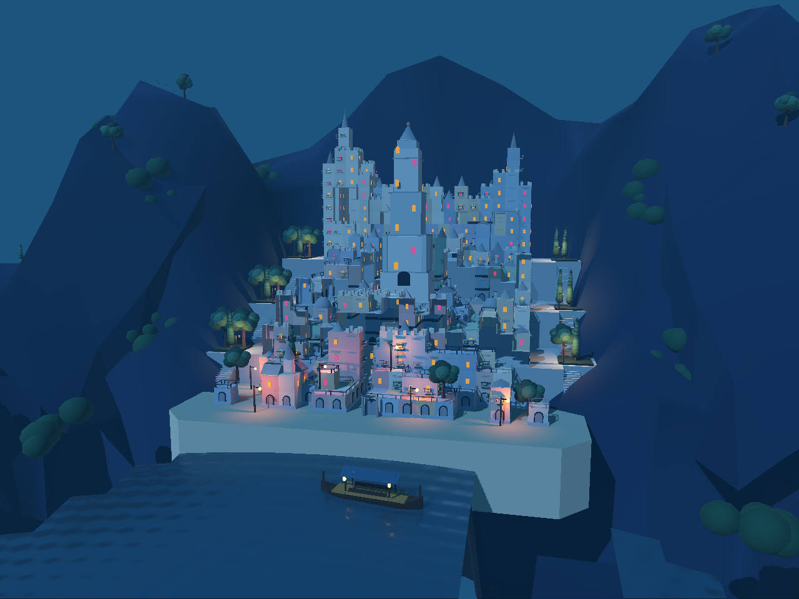
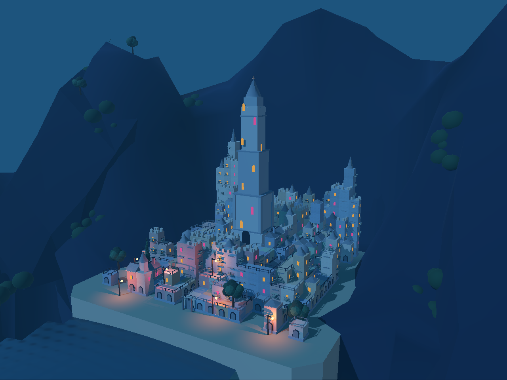
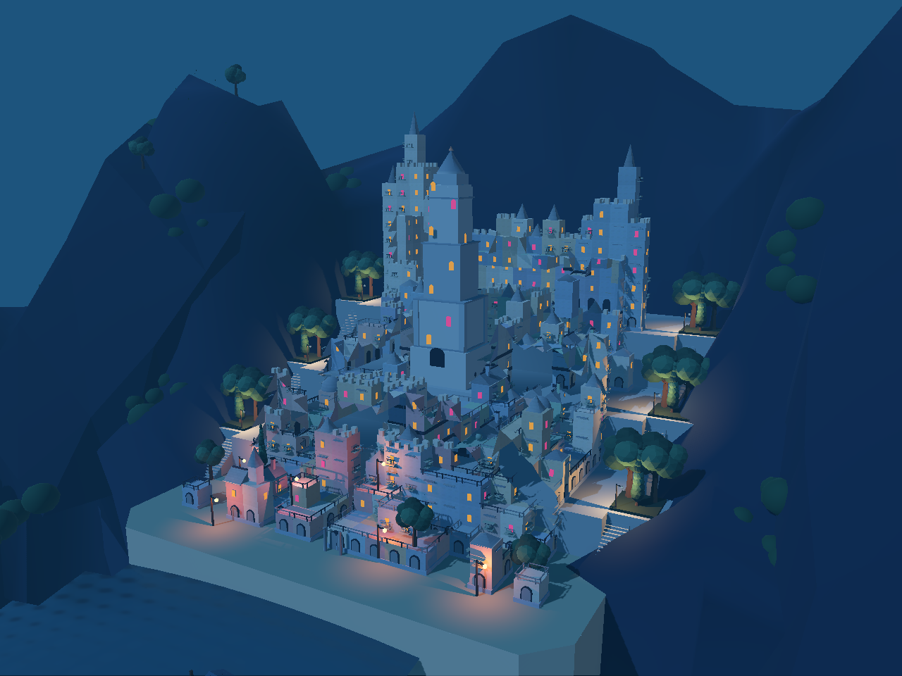
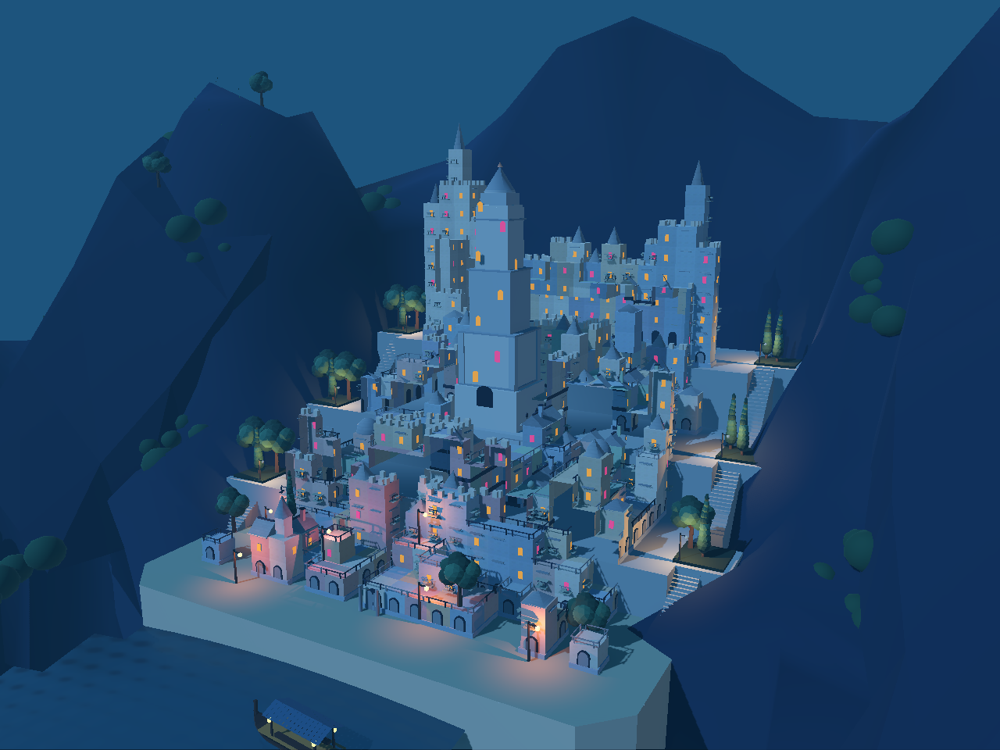

第一轮：四级台地、六处庭院、城堡游船。第二轮：统一建筑切分边界，调整树冠／柏树组合与庭院位置，补齐水岸镜头。以下均为 Godot 实际渲染。




仍是独立视觉候选：台地过于规整、内部庭院不足，建筑切分边界仍需逐处处理；山体、水面外边缘与岸墙细节未达目标。未完成碰撞、导航、上下船或巡游逻辑，也没有重新运行 WFC 求解。未替换正式游戏。
建筑 Blender 文件 · 游船 Blender 文件 · Godot 测量